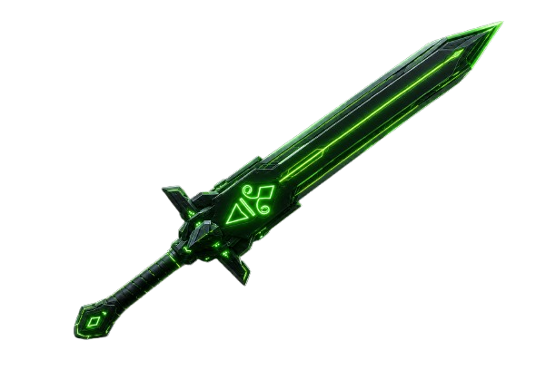
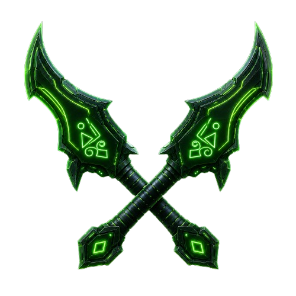
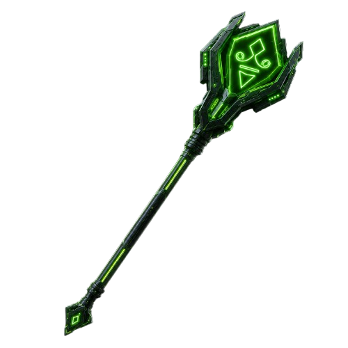
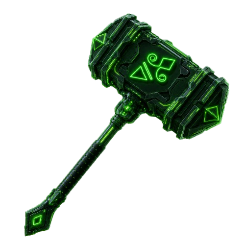
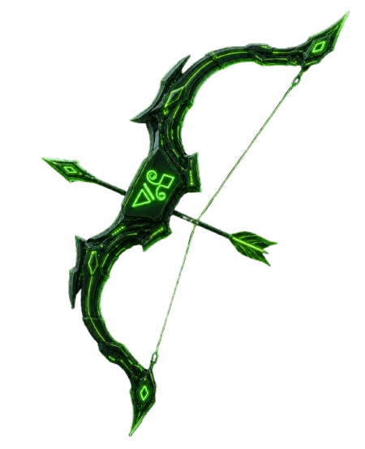
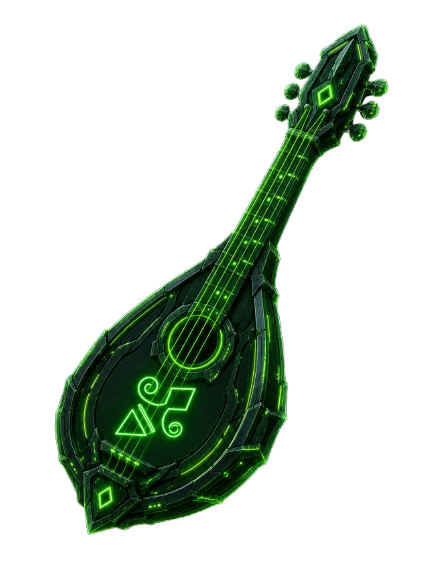

ARBONET
Guide du Voyageur
Un monde où la nature et la technologie coexistent en équilibre fragile.
Des chênes-serveurs dont les racines pulsent de données. Des créatures mi-chair, mi-code.
Et toi — un aventurier qui vient de poser le pied dans l'Antre de Pointu.
Bienvenue.
Avant de pouvoir arpenter Arbonet, il te faut créer ton profil d'aventurier.
Pointu lui-même t'accueille dans l'Antre — une caverne ancienne gravée de circuits lumineux.
C'est ici que tout commence.
!rejoindre
Crée ton profil d'aventurier dans Arbonet. À faire une seule fois.
Ton tout premier message dans le jeu.
!choisirclasse [nom]
Choisit ta classe parmi les 5 disponibles. Définit tes stats, ton arme et ton style de jeu.
Juste après !rejoindre.
Tape le nom de la classe pour voir sa description : !hexadecimeur, !cryptolame, !hackmancien, !firewaller, !algorythmancien
!profil
Affiche tes stats complètes : niveau, PV, XP, RAM, classe, équipement...
À tout moment pour vérifier ton état.
!sousclasse [nom]
Débloque une spécialisation qui améliore tes capacités. Irréversible.
Uniquement disponible à partir du niveau 5.
Arbonet est vaste. Pointu et ses alliés ont besoin de toi pour explorer ses recoins,
récupérer des artefacts, escorter des marchands ou entretenir les chênes-serveurs.
Chaque mission rapporte de l'XP, des RAM... et parfois un objet rare.
!quete
Lance une nouvelle quête ou consulte l'avancement de ta quête en cours.
Quand tu es disponible — pas en combat.
Les quêtes durent entre 5 et 30 min. La résolution est automatique !
!abandon
Abandonne ta quête en cours. Tu seras pénalisé d'un cooldown de 5 minutes.
Si tu veux changer de quête. Utilise-le avec parcimonie.
!accepter / !refuser
Répond aux propositions que tu croises pendant une quête. Tu as 2 minutes pour décider.
Quand un message t'invite à choisir en cours de route.
Pendant une quête, tu peux tomber sur des ennemis, des marchands ou le mystérieux Vieux Sage d'Arbonet.
Tes choix ont des conséquences !
Arbonet est peuplé de créatures corrompues par Hector-Pierre Castor.
Martre-Trojan, Sanglier-Crash, Taupe-Malware... ils rôdent sur tes routes.
Quand l'un d'eux surgit, tu as quatre options.
| Commande |
Action |
Note |
| !attaque |
Frappe l'ennemi. L'ennemi riposte toujours. |
|
| !soin |
Récupère des PV grâce à tes capacités de classe. |
Coûte 5 Mana. L'ennemi riposte quand même. |
| !defense |
Posture défensive — tu encaisses mieux ce tour-ci. |
+3 à ta Classe d'Armure ce tour. |
| !fuir |
Tente de fuir le combat. |
Risqué si l'ennemi te rattrape. La Cryptolame fuit plus facilement. |
Si tu tombes à 0 PV, la quête s'arrête et tu es en cooldown pendant 10 minutes.
!repos
Restaure tous tes PV et tout ton Mana d'un coup.
Tu te retrouves dans l'Antre de Pointu, à l'abri, pour te régénérer.
Hors combat et hors quête. Cooldown de 30 minutes.
Même hors !repos, tes PV et Mana se régénèrent lentement toutes les 15 minutes de stream.
Ton sac peut contenir jusqu'à 8 objets. Armes, armures, potions, fragments mystérieux...
Les objets se trouvent en quête, s'achètent aux marchands ou se gagnent en combat.
!inventaire
Affiche le contenu de ton sac et ce que tu portes sur toi.
!equiper [nom de l'objet]
Équipe une arme, armure ou accessoire depuis ton sac.
Équiper un objet quand un slot est déjà occupé renvoie l'ancien dans le sac.
!equipement
Affiche les bonus totaux de ce que tu portes actuellement.
!utiliser [nom de l'objet]
Utilise un consommable (potion, etc.) depuis ton sac. Fonctionne en combat.
!vendre [nom de l'objet]
Vend un objet du sac ou un équipement contre des RAM.
Hors combat uniquement.
✦ Quelques objets de l'Antre

Lame-de-Pointu
+2 Attaque

Croc-de-Loup
+2 Attaque

Sceptre-de-L'Antre
+2 Attaque · +5 Mana

Marteau-Carapace
+1 Attaque · +1 Charisme

Arc-Fléau
+3 Attaque

Luth-01
+1 Charisme
La RAM est la monnaie d'Arbonet — la mémoire vive du monde.
Tu en gagnes en quête, en combat, et en vendant des objets.
L'XP te fait progresser en niveau, avec des bonus à chaque palier.
Arbonet est un monde hybride. Les chênes-serveurs font circuler la mémoire collective
à travers leurs racines lumineuses. Mais cette mémoire disparaît — volée, corrompue, effacée.
Hector-Pierre Castor en est le responsable. Convaincu que la technologie a détruit
ce qui faisait la valeur de son monde, il s'acharne à tout effacer.
Pointu, la tortue ancienne aux yeux bleus électriques, garde l'Antre depuis des siècles.
Sa carapace est couverte de cicatrices. Dans chaque fissure, une histoire. Un secret.
Tape !arbonet dans le chat pour en entendre davantage...
Arbonet recèle des secrets que nul guide ne peut te révéler.
Explore. Lis les descriptions de tes objets. Écoute les PNJ lors de tes quêtes.
Le monde a de la mémoire — à toi de la retrouver.